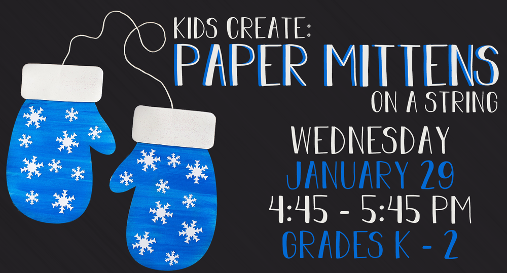
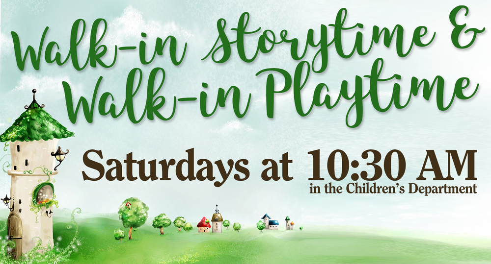
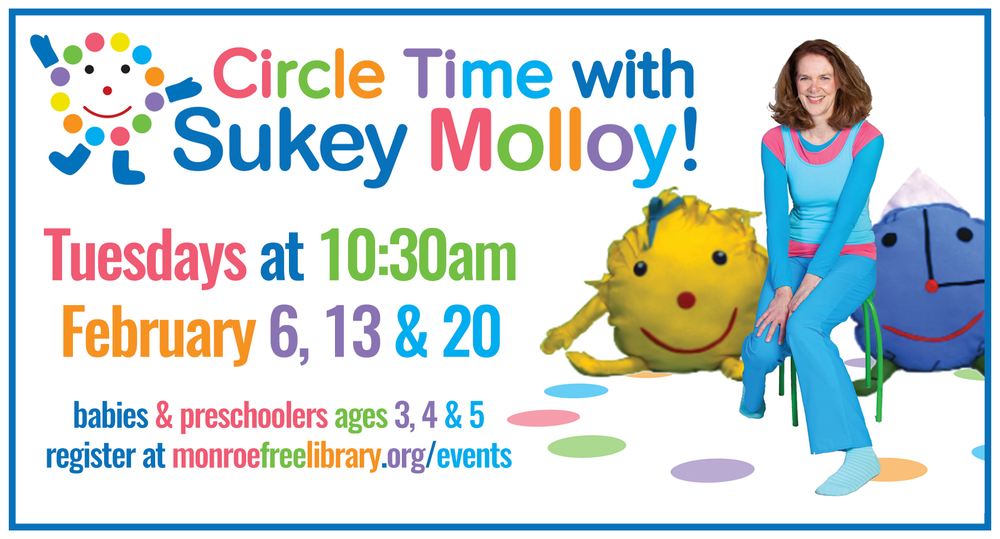
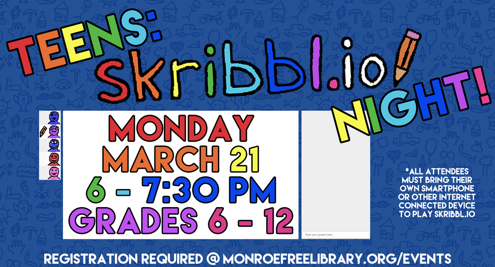
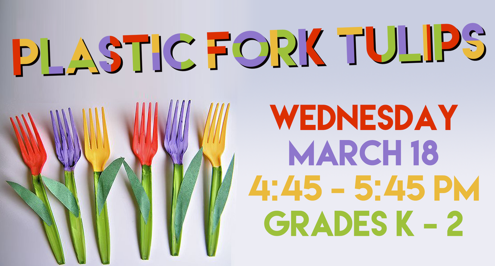
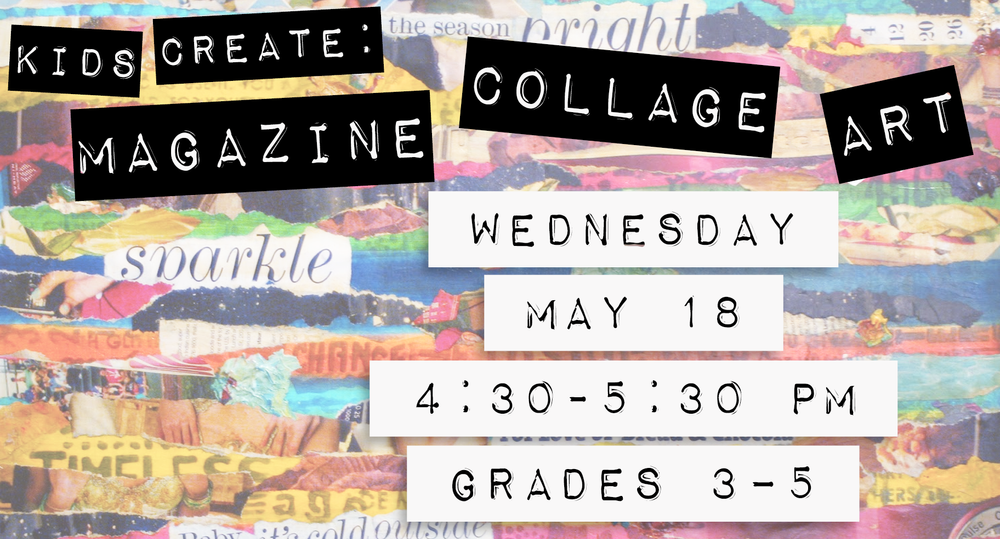
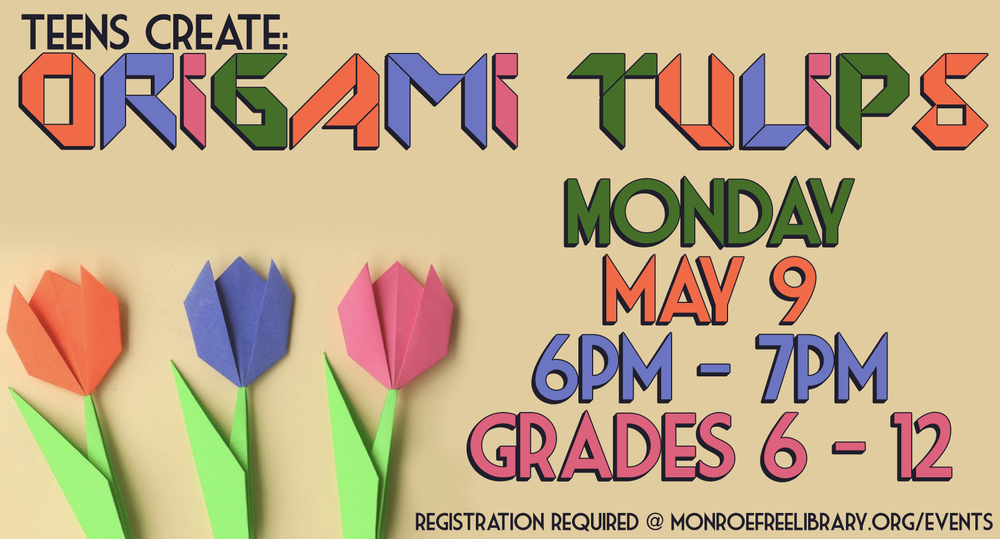
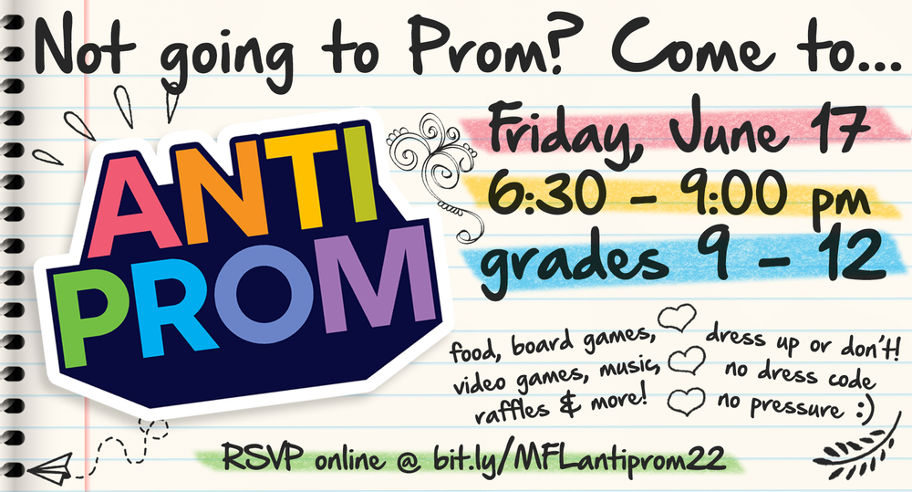
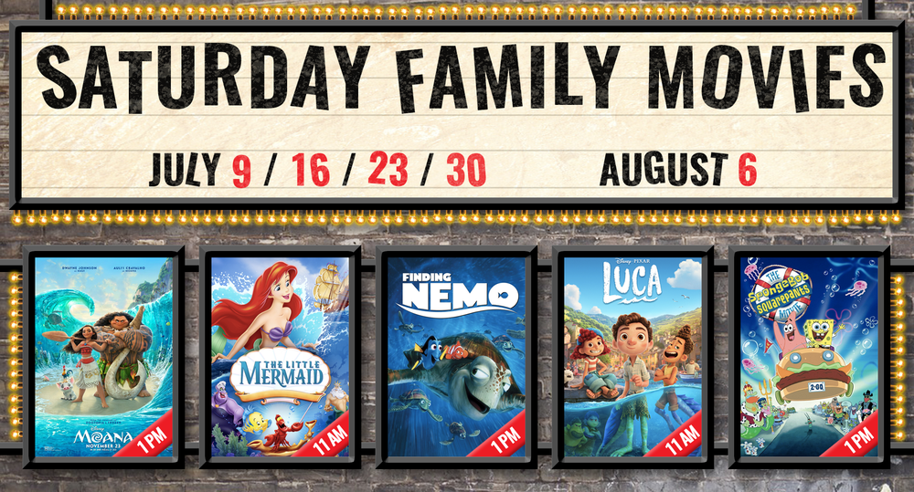
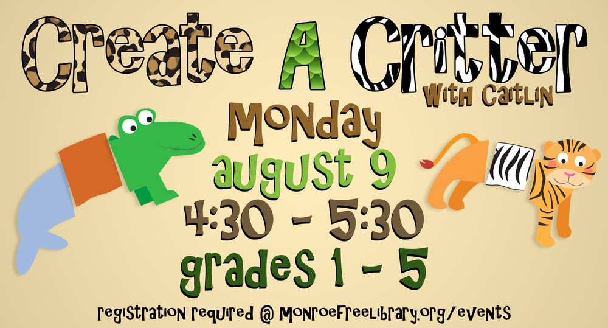
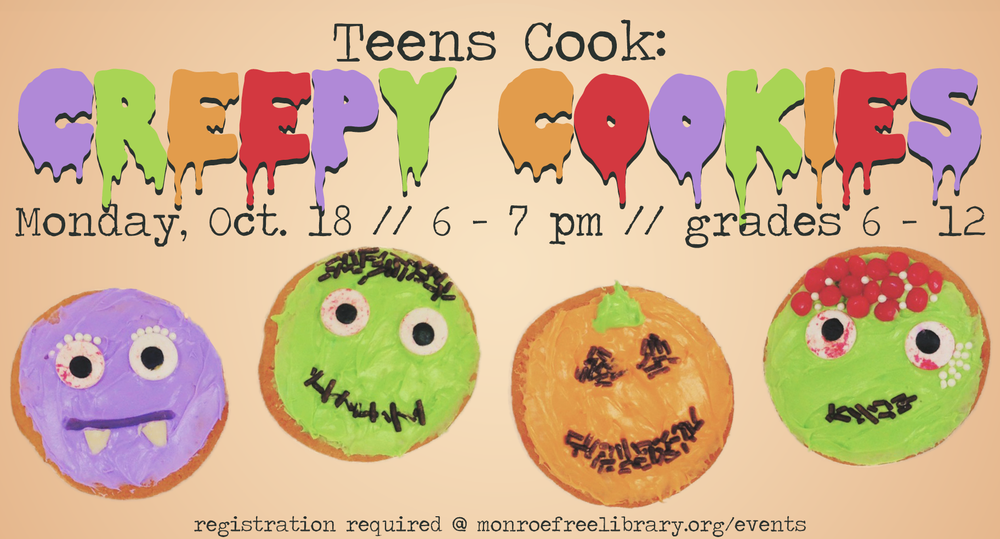
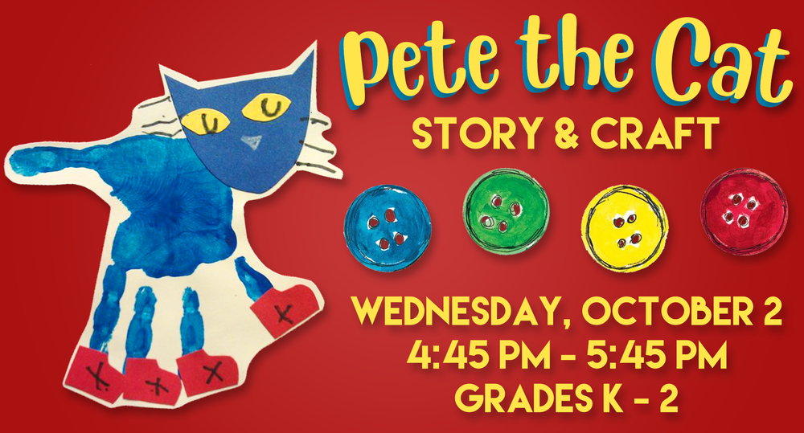
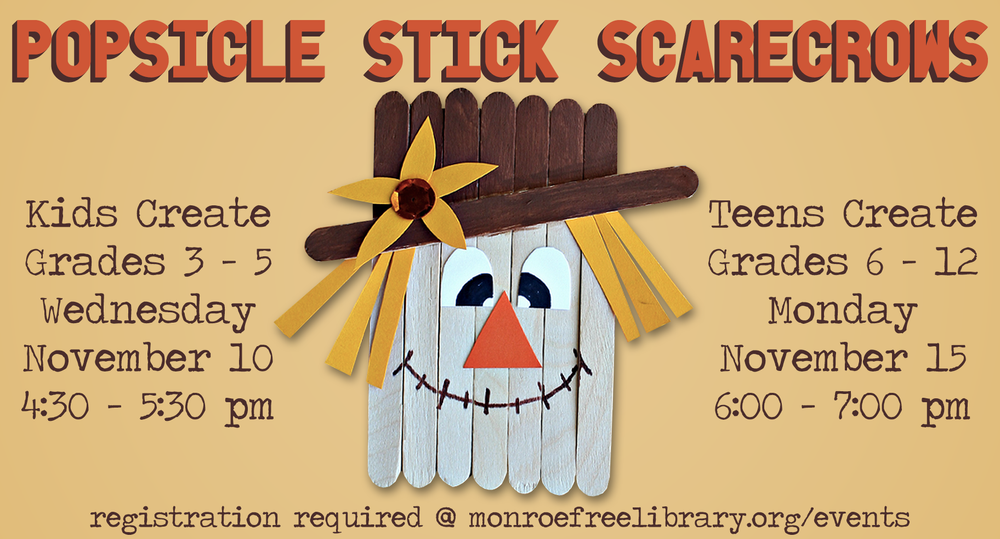
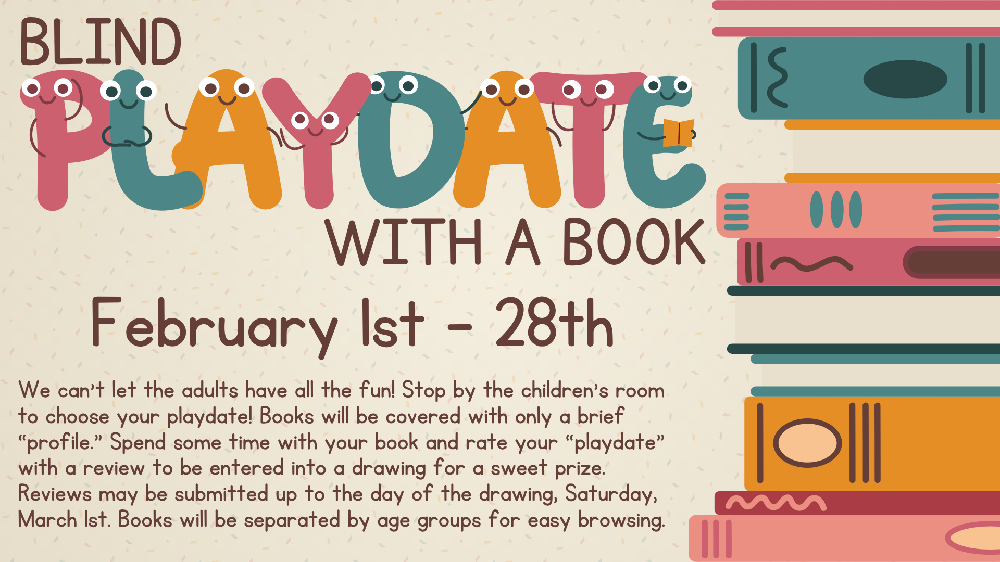
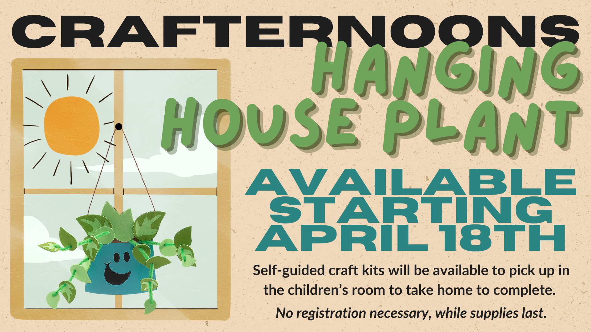
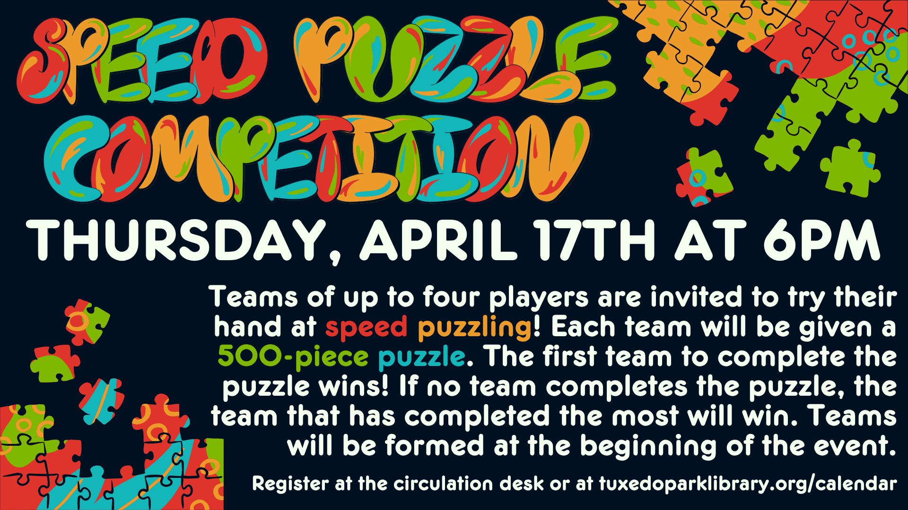
A selection of digital assets made for Tuxedo Park Library and Monroe Free Library in Adobe Creative Suite and Canva. Assets were used on websites and TV screens in-house.















